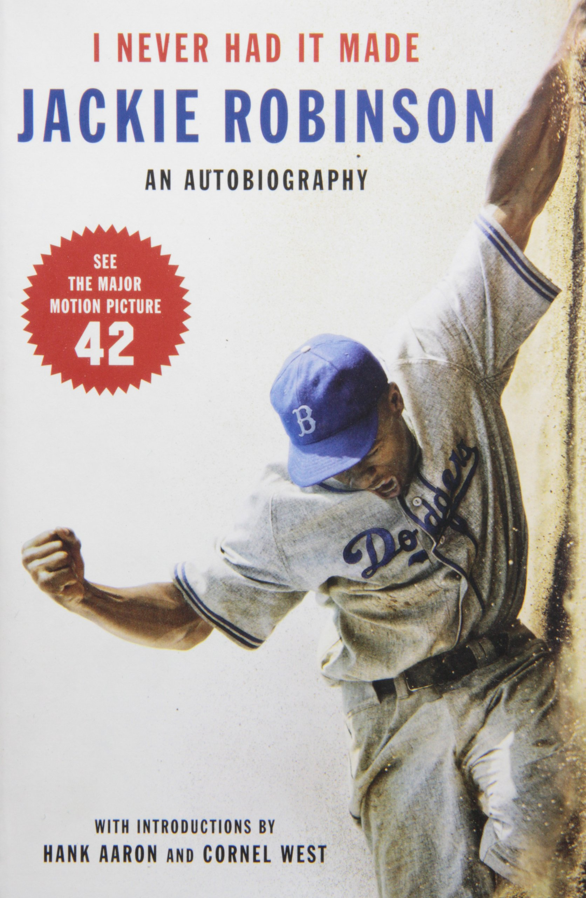
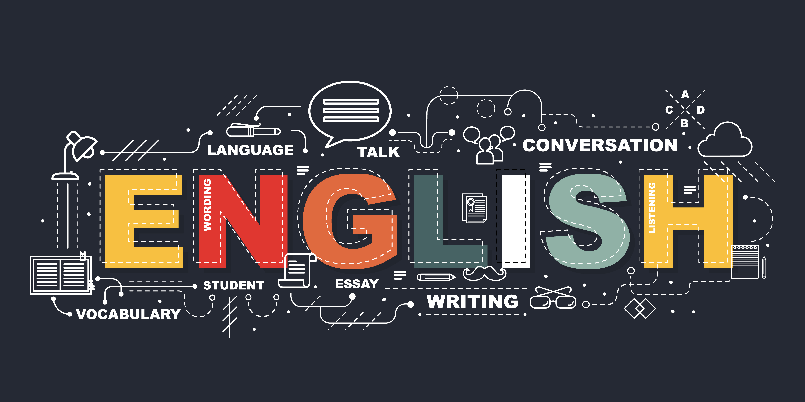
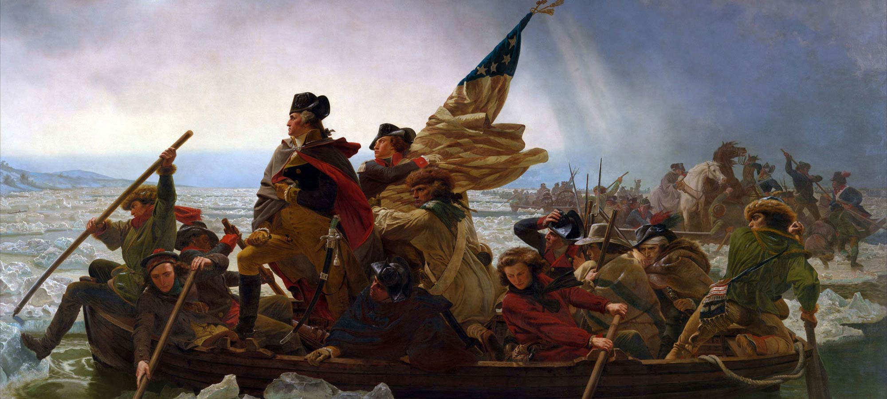
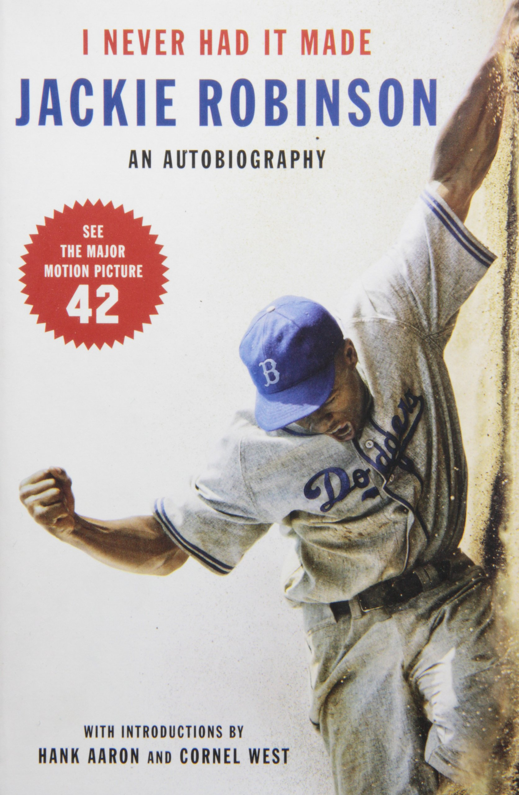
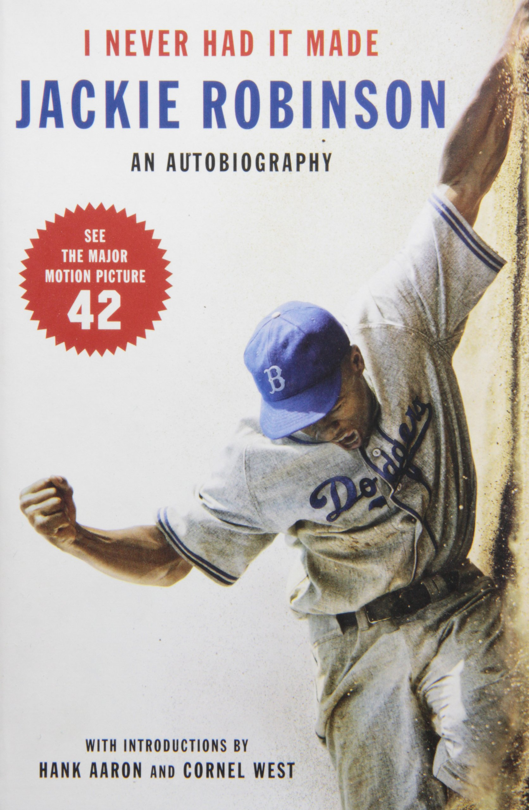

I see you have found my website! Hello and welcome! My name is Momin Azam! As you scroll through this page, you will learn a bit about me as well as three of the projects that I did in CS and Math, a class that I took this year.
I LOVE BOOKS!!!
This is the thing that I really love to do. To me, books are an escape out of my life and into the lives of others. It makes me feel less alone in the world I live in. It's also a good way to grow your vocabulary and great form of entertainment.
Some of my favorite books in the fiction genre include Turtles All the Way Down by John Green, The Outsiders by SE Hinton, and It by Stephen King.
Other books that I love in the non-fiction genre include Hilbilly Elegy by JD Vance, Rocket Boys (AKA October Sky) by Homer Hickam, and I Never Had It Made by Jackie Robinson.

My favorite subjects are English, History (specifically US History), and Psychology.
English

I have always loved reading (as stated above) and writing. I find composition to be the best way to get ideas across and it's a great way to reach others as well. It also makes you sound smart as well, but that doesn't really matter all that much 😂. Another thing I love is that we get to analyze texts and look at them for what they offer and the lessons that they can give us. There's so much that you can get out of reading a book, no matter what genre it may be.
Psychology
This has become a new favorite subject of mine. I took AP Psychology this year and I just fell in love with the different topics that were taught and learning why we do what we do and why we are the way we are and what shapes us. Some topics that I loved learning include personality, operant and classical conditioning, and the different psychologists (especailly Sigmund Freud; I loved learning his theory; it was so wacky and weird, but that was what made it awesome).
History

This one is a recent favorite also. I've loved learning US History, mainly thanks to Mr. Ryan, who made learning history fun and interesing. It's cool to learn about the past and the events that led up to where we are now. History also shows us what we should do and what mistakes we shouldn't repeat. I wanna pursue learning history a lot more, so that's why I'm thinking about doing a minor in history in college.
Now that you know stuff about me, let's talk a little bit about CS and Math.
There are three projects that I are my favorites this year. Here are the links to them.
I chose this one because of the effects and the changes that are made. And in general it's just awesome, too.
This one is awesome because there's a lot of bouncy balls bouncing around! It's also kinda hard to keep up with, but that's what makes it awesome!
I chose this one because it's a lot of fun to look at. It's also cool when it refreshes and pops up in different spots and changes color. Also the eyeroll emoji 🙄; who doesn't use that at all?


 
